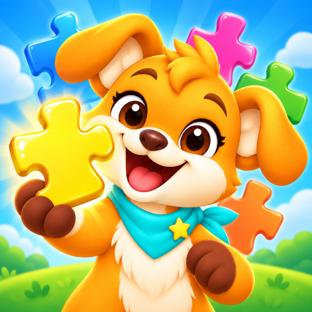

FABAY GAMES / PUBLISHED ANDROID GAME

PuzzliPop: Kids Jigsaw Puzzles
Fun jigsaw puzzles for kids & toddlers with animals, fruits, shapes and songs.
Learning through playful interaction
Gameplay
Drag-and-drop puzzle pieces, familiar pictures and clear visual feedback create an experience designed for little hands. Animals, fruit, shapes and everyday objects give each puzzle a recognisable theme.
Design & development focus
Completing a picture leads to celebration, sounds and songs. The design connects the puzzle interaction with discovery while keeping the interface simple for toddlers and preschool players.
A LOOK INSIDE
Game screenshots.


Screenshots and game information from the official Google Play listing ↗.